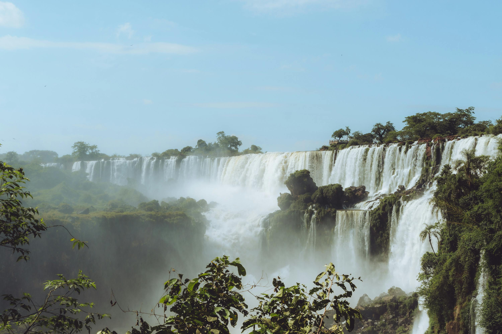

Iguazu Falls

Nestled on the border between Argentina and Brazil, the Iguazu Falls are one of the most breathtaking natural wonders in the world. This magnificent waterfall system, consisting of 275 individual falls, stretches over 2.7 kilometers (1.7 miles) and plunges up to 82 meters (269 feet) into the Iguazu River below. The name "Iguazu" comes from the Guarani words "y" (water) and "ûasú" (big), perfectly capturing the grandeur of this awe-inspiring site.
The Iguazu Falls are located within two national parks: Iguazú National Park in Argentina and Iguaçu National Park in Brazil. Both parks are UNESCO World Heritage Sites, recognized for their stunning natural beauty and rich biodiversity. Visitors can explore the falls from both countries, each offering unique perspectives and experiences.
One of the main attractions of the Iguazu Falls is the Devil's Throat (Garganta del Diablo), a U-shaped chasm that is the most powerful and impressive part of the falls. Standing on the viewing platform, you can feel the immense force of the water as it crashes down, creating a mesmerizing mist and a thunderous roar. The surrounding subtropical rainforest is home to a diverse array of wildlife, including colorful butterflies, exotic birds, and playful monkeys, adding to the enchanting atmosphere.
For adventure seekers, the Iguazu Falls offer a range of activities, such as boat rides that take you close to the base of the falls, thrilling helicopter tours, and scenic hiking trails. Whether you're a nature lover, a photography enthusiast, or simply looking for an unforgettable experience, the Iguazu Falls are a destination that will leave you in awe of nature's power and beauty.